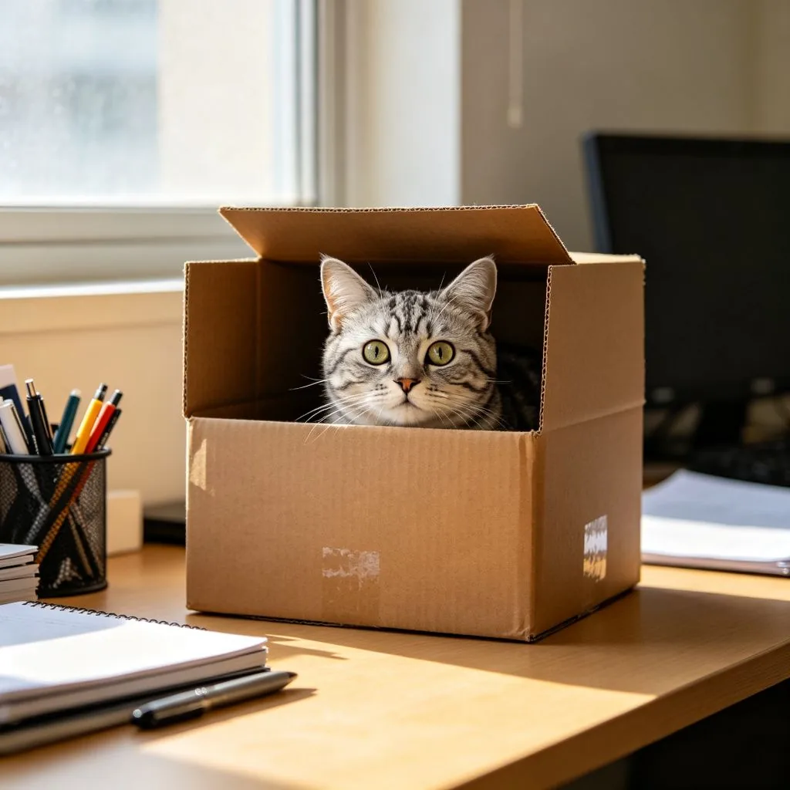

午後的陽光透過紗簾灑進窗邊，在地板上形成了一片溫暖的光斑。一隻美國短毛貓走到光斑中，舒展身體，打了個大哈欠，然後蜷縮起來，閉上眼睛，開始享受一場愜意的日光浴。牠的毛髮在陽光下閃爍著溫暖的光澤，呼吸緩慢而平穩，整個貓都散發著一種「世間萬事與我無關」的從容。為什麼貓咪這麼喜歡曬太陽？
貓咪的太陽崇拜
貓咪對陽光的熱愛是出了名的——只要有陽光的地方，就一定能找到一隻貓咪。這種行為背後有著深刻的生物學原因：
節省能量：貓咪的正常體溫是38-39°C，比人類高1-2度。維持高體溫需要消耗大量能量，而曬太陽是一種免費的「加熱」方式——透過吸收太陽的熱量，貓咪可以減少用於維持體溫的能量消耗，從而節省寶貴的能量。研究顯示，貓咪在曬太陽時的代謝率可以降低約30%，這對在野外食物不穩定的貓科動物來說是一種重要的生存策略。

舒適和放鬆：溫暖的陽光可以讓貓咪的肌肉放鬆，促進血液循環，帶來一種舒適和放鬆的感覺。就像人類喜歡泡溫泉或做熱敷一樣，貓咪也喜歡溫暖的感覺。陽光還可以促進貓咪體內內啡肽（一種天然的「快樂物質」）的分泌，讓貓咪感到愉悅和滿足。
維生素D的合成：和人類一樣，貓咪的皮膚在陽光的紫外線照射下可以合成維生素D。維生素D對鈣的吸收和骨骼健康至關重要。不過，貓咪的毛髮會阻擋大部分紫外線，因此貓咪透過皮膚合成的維生素D其實很有限——大多數維生素D還是來源於食物。但貓咪在梳理毛髮時，會攝取皮膚表面的維生素D，這也是一種補充方式。
驅除寄生蟲：陽光中的紫外線有殺菌和驅蟲的效果。貓咪在陽光下打滾和梳理毛髮，可以幫助減少皮毛中的寄生蟲（如跳蚤、壁蝨）和細菌。在野外，貓科動物會特意在陽光下休息，以保持皮毛的清潔和健康。
貓咪日光浴的安全注意事項
雖然貓咪喜歡曬太陽，但在某些情況下也需要注意安全：
- 防曬：和人類一樣，貓咪也會曬傷！尤其是白皮膚、淺色毛髮、毛髮稀疏的部位（如耳朵、鼻子、腹部）。長時間暴露在強烈的陽光下可能導致曬傷、皮膚發紅、脫毛，甚至增加皮膚癌的風險。在夏季正午陽光最強烈的時候，建議限制貓咪的日光浴時間，或者提供遮蔭的選擇。
- 防中暑：貓咪的散熱能力不如人類（主要靠喘氣和腳墊出汗），在高溫環境下容易中暑。如果貓咪在陽光下出現過度喘氣、體溫升高、精神萎靡、嘔吐等症狀，可能是中暑的表現，應立即轉移到陰涼處，用濕毛巾擦拭身體，必要時就醫。
- 窗戶安全：很多貓咪喜歡在窗邊曬太陽，但如果窗戶沒有安裝紗窗或防護網，貓咪可能會因為追逐小鳥或昆蟲而不慎墜樓。「高樓綜合症」在貓咪中很常見，即使是從低樓層墜落也可能造成嚴重傷害。因此，在貓咪可以接觸的窗戶一定要安裝牢固的紗窗或防護網。
- 提供選擇：最好的方式是讓貓咪自己選擇——提供有陽光的區域，也提供陰涼的區域，讓貓咪根據自己的需要自由移動。貓咪很聰明，當牠覺得太熱時會自己移動到陰涼處。
美國短毛貓小檔案
美國短毛貓（American Shorthair）是北美最受歡迎的貓品種之一。牠們的祖先是跟隨歐洲殖民者乘船來到美洲的「工作貓」，用來捕捉船上的老鼠。經過數百年的自然選擇和人類培育，美國短毛貓成為了一種體格強健、性格溫和、適應力強的品種。美短的毛色非常多樣，最經典的是銀色虎斑（Silver Tabby），但也有超過80種被認可的毛色和花紋。美短性格獨立、友善、不太需要過度關注，是非常適合家庭飼養的品種。

陽光窗邊的美短，用牠的從容和愜意，詮釋了什麼叫做「貓咪的日光浴哲學」。在這個忙碌的世界裡，或許我們都可以從貓咪身上學到一點——偶爾停下來，找一片溫暖的陽光，什麼都不做，什麼都不想，只是單純地享受當下的溫暖和寧靜。這或許就是最簡單、也最難得的幸福。